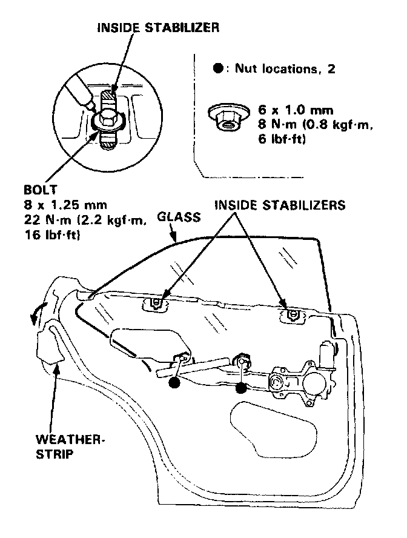
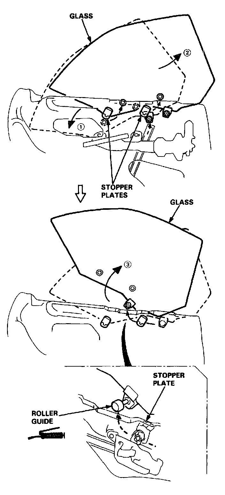
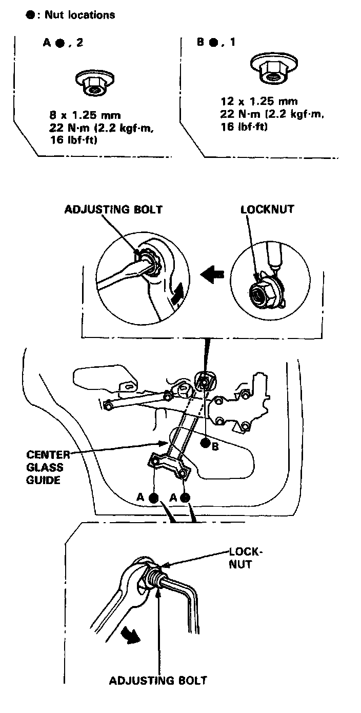
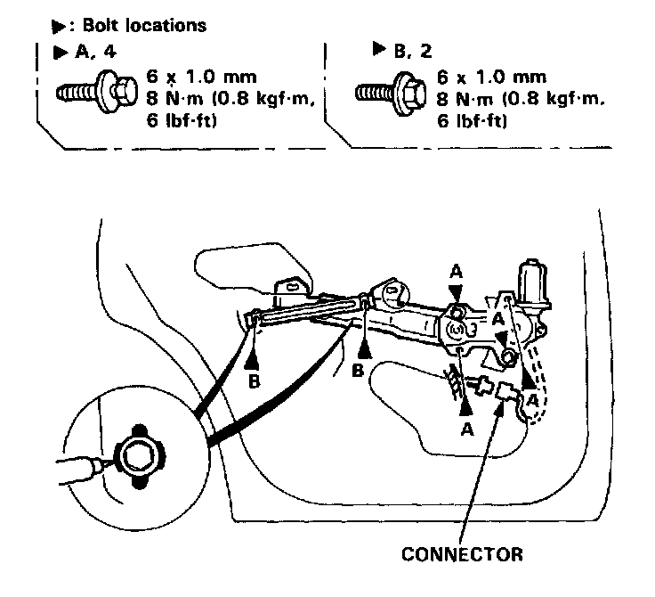
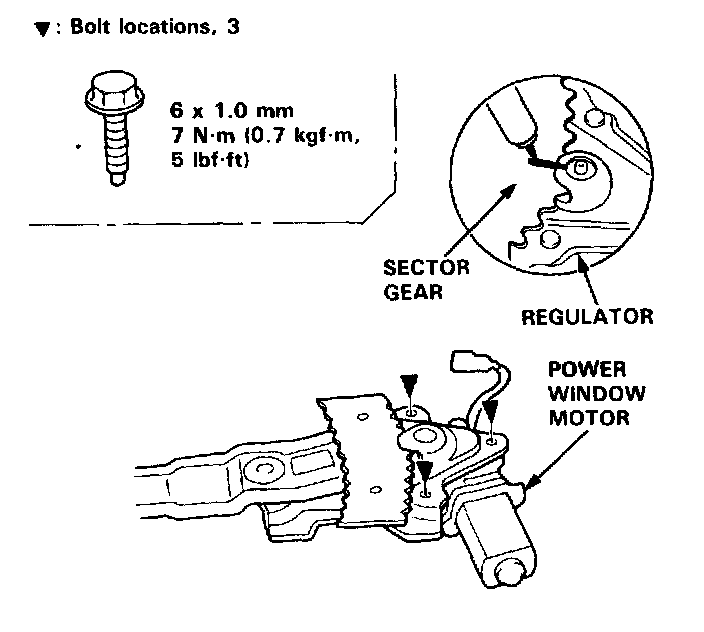
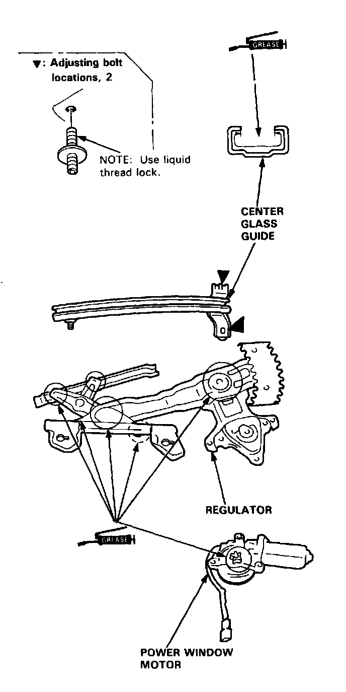
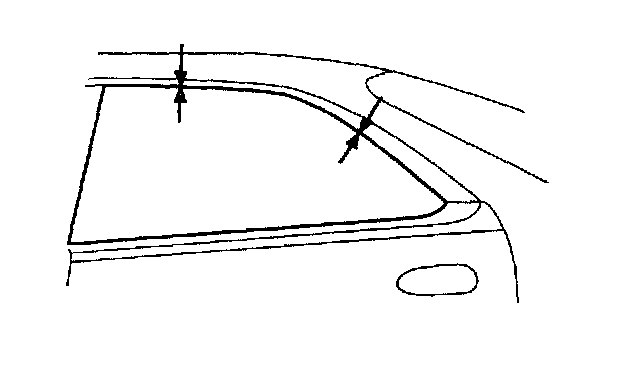

Rear Door Window Regulator: Service and Repair
Sedan Rear Door
Glass/Regulator/Center Guide Replacement
1. Remove:
^ Door panel
^ Plastic cover
2. Connect the power window switch to the door harness.
3. Peel the weatherstrip away from the door.
4. Loosen the inside stabilizers.
NOTE: Scribe a line around the bolts to show the original adjustment.
Carefully move the glass until you can see the glass mounting nuts, then remove them.

5. Carefully remove the glass from the window slot as shown.
NOTE: Take care not to drop the glass inside the door.

6. Remove the center glass guide.
NOTE:
^ Hold the adjusting bolts with a hex wrench when removing the locknuts.
^ Scribe a line around the locknuts to show the original adjustment.

7. Disconnect the connector, and remove the regulator through the center hole in the door.
NOTE: Scribe a line around the roller guide bolts to show the original adjustment.

8. Remove the power window motor from the regulator.
NOTE: Before removing the power window motor, mark the location by scribing a line across the sector gear and regulator.

9. Grease all the sliding surfaces of the regulator and center glass guide where shown.
10. Install the power window motor on the regulator.
11. Check that the regulator moves smoothly by connecting a 12 V battery to the power window motor.

12. Roll the glass up and down to see if it moves freely without binding. Also make sure that there is no clearance between the glass and weatherstrip when the glass is closed. Adjust the position of the glass as necessary.

13. Attach the door harness to the door correctly.
14. Disconnect the power window switch from the door harness.
15. When reinstalling the plastic cover, apply adhesive along the edge where necessary maintain a continuous seal and prevent water leaks.
16. Install the door panel.